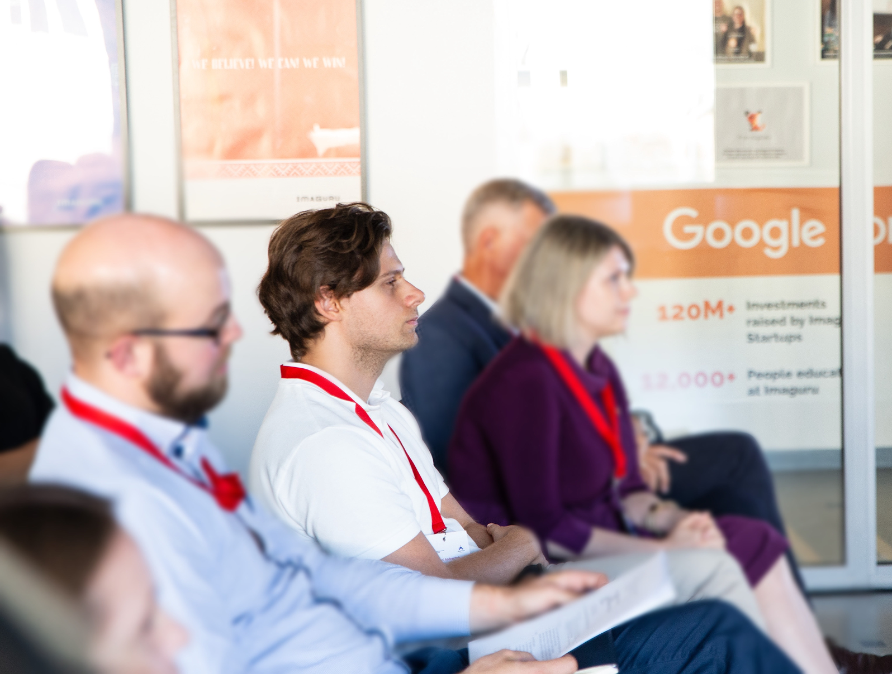

Explore
01 / Explore
about me; in short
The ideas and questions that shape my perspective and work.
Direction
I’m interested in the ways technology changes how people understand information, communicate ideas and influence decisions.
What excites me most is using these technologies to create new approaches and tools that can change how things are done across very different fields.

working with complexity
A big part of that is understanding how technology can help process large amounts of complex information, identify what matters, and transform it into clear, useful information tailored to individual contexts.
The same basic questions can matter at very different scales, from everyday personal decisions to processes that shape societies, countries and entire regions.